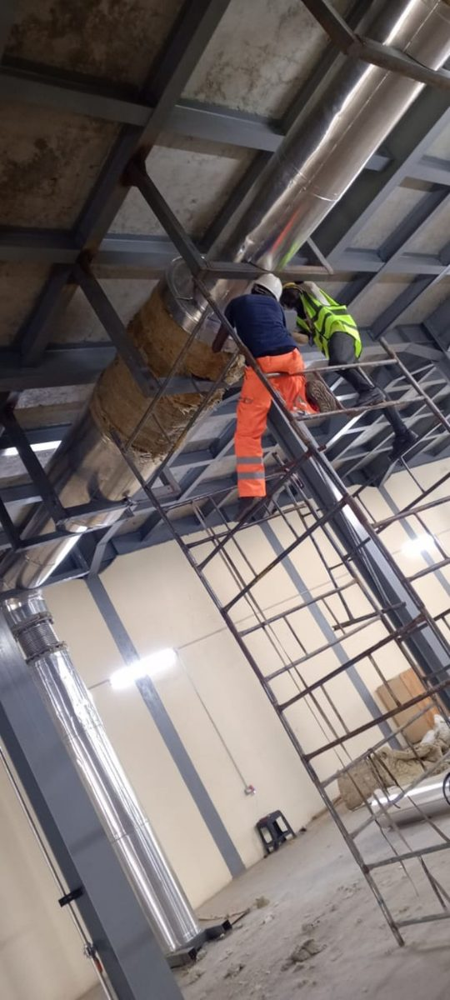
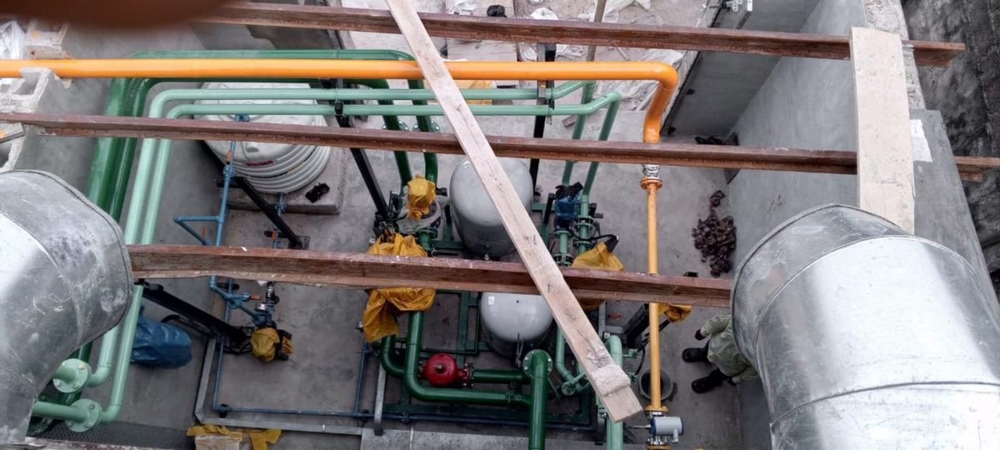

Engineering works carried out by Vertex Engineering Services Limited, shown with photographs from site. Final scope for any project is defined by the client requirements, site conditions and approved documentation.

3 Way Valve Installation HT Line
Professional installation of three-way valves on high-temperature (HT) lines, supporting controlled routing and regulation of process flow within industrial piping systems.
The work may include reviewing approved piping and equipment drawings, confirming valve orientation and flow direction, preparing connection points, positioning and installing the valve, checking associated fittings and supports, and carrying out applicable inspection and leak or pressure testing in line with the approved project procedure. Correct installation helps the system achieve its intended flow-control arrangement and supports safe, maintainable operation. Final configuration and testing must follow the actual system design, valve manufacturer's instructions and approved project specifications.
Request a quote for 3 Way Valve Installation HT Line
Exhaust Line Insulation Work
Exhaust line insulation work involves applying suitable thermal insulation and protective cladding to exhaust ducting and associated components, in accordance with the equipment operating conditions and approved project specifications.
Properly installed insulation helps reduce unwanted heat transfer, protect personnel from hot surfaces, support temperature management and protect surrounding equipment and structures from excessive heat exposure. The work may include surface and access preparation, insulation material fitting, securing, joint treatment and external cladding, followed by visual inspection of coverage, fit and finish. Material selection and installation details must be confirmed against the actual exhaust temperature, design and project requirements.
Request a quote for Exhaust Line Insulation Work
Priming of Gas GENSET HT & LT Line
Preparation and priming activities associated with the high-temperature (HT) and low-temperature (LT) lines serving a gas generator set (GENSET), as applicable to the installed system.
The work may include checking line identification and routing, confirming connections and valve positions, preparing the relevant circuits, carrying out the specified priming or filling procedure, checking for visible leakage and verifying readiness for subsequent inspection, testing or commissioning. HT and LT circuits perform different thermal-management duties and must be treated according to the actual genset design, manufacturer guidance and approved procedure.
Request a quote for Priming of Gas GENSET HT & LT Line
View of Gas Genset Auxilliaries Installation
Installation and integration of auxiliary systems associated with gas generator sets.
Depending on the actual genset configuration, auxiliary systems can include supporting pipework, pumps, valves, cooling and lubrication-related equipment, fuel-system interfaces and other equipment required for generator operation. The service involves installation coordination, checking equipment and pipework connections, verifying supports and routing, inspecting interfaces and preparing the relevant systems for functional checks and commissioning. Properly installed auxiliaries help support dependable operation, maintainability and effective servicing of the gas genset.
Request a quote for View of Gas Genset Auxilliaries Installation
Offloading Activities
Industrial equipment offloading services involving the controlled unloading and handling of machinery, packaged equipment and project materials at site.
Activities may include offloading preparation, coordination of lifting personnel, review of the load and lifting arrangement, use of suitable lifting accessories, controlled crane-assisted lifting, movement and placement at the designated location, and coordination with site personnel. Safe offloading depends on verified load information, suitable lifting equipment, competent personnel, an appropriate lifting plan, exclusion zones and site-specific safety controls. All lifting operations must follow the approved lifting plan and applicable site procedures.
Request a quote for Offloading Activities
Cable Tray Fabrication
Professional cable tray fabrication and installation services designed to provide safe, organised and reliable cable-routing infrastructure for industrial facilities.
Work may cover cable tray measurement, cutting, bending, shaping, fabrication, support arrangement and installation to suit specific project requirements. Properly aligned cable tray systems support effective cable management, improve accessibility for inspection and maintenance, and promote neat, structured routing of electrical and instrumentation cables. Workmanship, structural support, installation accuracy and conformity with approved engineering drawings and project specifications are prioritised.
Request a quote for Cable Tray FabricationScope, methods and testing for each job follow the approved project drawings, specifications, manufacturer instructions and site procedures.